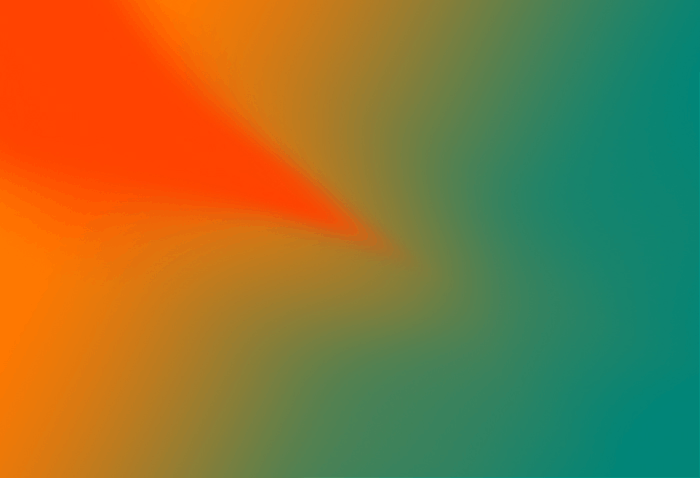

ZimmerFrei – Safari
26.5.2018
Centro Direzionale del Gruppo Sapir
Ravenna
22.00
Una selezione e ricombinazione di materiali provenienti dall'archivio di registrazioni ambientali del gruppo ZimmerFrei, di cui Massimo Carozzi è componente e co-fondatore. Si tratta di "fonografie", immagini sonore memorizzate, frammenti di tempo incisi per sempre su un supporto, che per l'occasione vengono mixati e diffusi dall'artista in forma di concerto.
Corte del Centro Direzionale del Gruppo Sapir – Via G. Antonio Zani 1, Ravenna
Ingresso libero con tessera associazione MU 2018 obbligatoria
Parte di Marea, rassegna culturale per la città di Ravenna a cura di MU.
Immagine Produzioni Studio.
Realizzato grazie al sostegno di Gruppo Sapir.